2017上海国际运动生物力学与临床转化会议在上海交大举行
2017年6月23-25日，2017上海国际运动生物力学与临床转化会议在上海交大徐汇校区工程馆报告厅举行。此次大会由上海交通大学数字医学临床转化教育部工程研究中心（DMCT）和上海交通大学医学院附属第九人民医院联合主办、上海交通大学生物医学工程学院承办、英国索尔福特大学、福建中医药大学、上海市骨科内植物重点实验室、上海市医学会数字医学专科分会共同协办。上海交通大学生物医学工程学院副院长古宏晨教授到会致辞，上海交大DMCT主任戴尅戎院士担任本届会议名誉主席，上海交大DMCT常务副主任、上海交大医学院附属第九人民医院顾冬云教授担任本届会议主席。
- 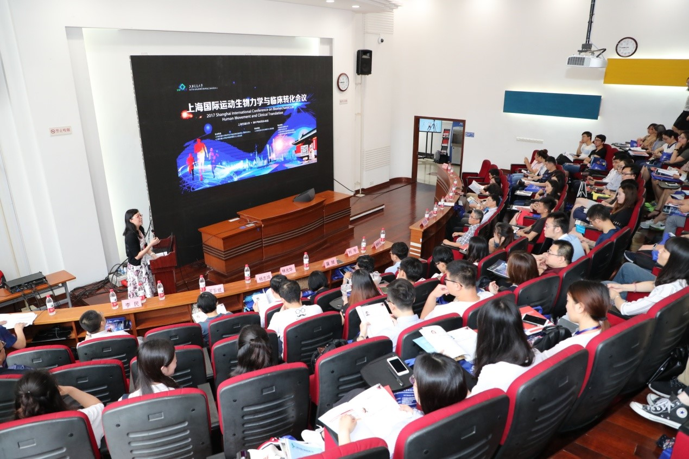
- 图1：大会现场图
- 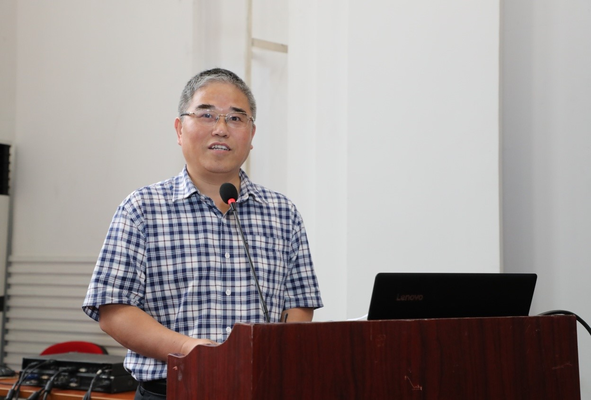
- 图2：古宏晨院长在致欢迎词
- 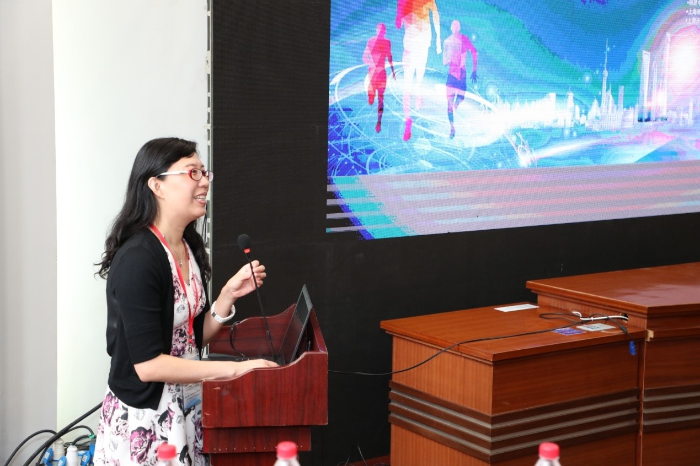
- 图3：顾冬云教授在主持开幕仪式
会议聚焦运动生物力学的最新研究进展与临床应用转化，设立了骨肌系统运动生物力学、步态分析与临床应用、竞技体育生物力学和康复运动生物力学四个专题，邀请了18位国内外知名研究学者和临床专家，做了精彩纷呈的主题报告。这18位专家分别是上海交大医学院附属第九人民医院戴尅戎院士和顾冬云教授、上海体育学院刘宇教授、英国Salford大学研究员刘安民教授、美国北卡罗来纳大学夏洛特分校郑乃权教授、英国Salford大学临床步态分析Richard Baker教授（录像演讲）、上海交大医学院附属瑞金医院陈生弟教授、加拿大多伦多康复研究院李悦教授、台湾慈濟大学林光华教授、杨志鸿教授、上海中医药大学附属岳阳中西医结合医院步态分析室姜淑云主任、北航生物与医学工程学院副院长蒲放教授、上海交通大学生物医学工程学院特别研究员蔡宗远老师、上海理工大学上海市康复器械工程技术研究中心陈文明副教授、福建省康复医院骨伤康复二科李民主任、福建中医药大学康复医学院王芗斌副教授、华山医院神经外科副主任医师张海石医生和英华儿童骨科医生集团发起人兼首席专家赵黎医生。会议吸引了来自全国各大高校、医院、科研机构的100余名代表注册参加了本次会议。
- 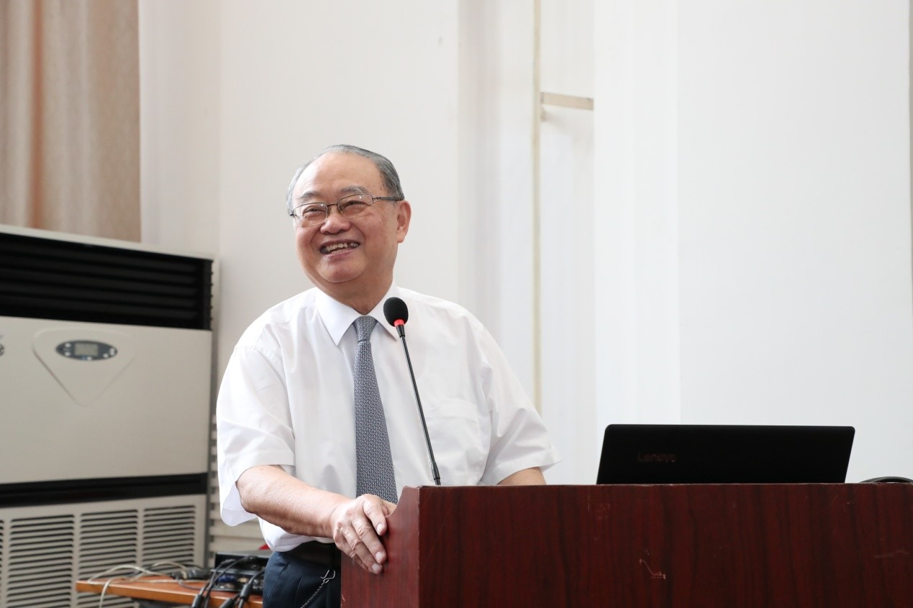
- 图4：DMCT戴尅戎院士在做主题报告
- 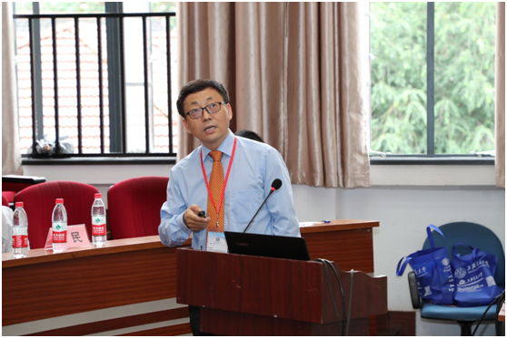
- 图5：上海体育学院刘宇教授在做主题报告
- 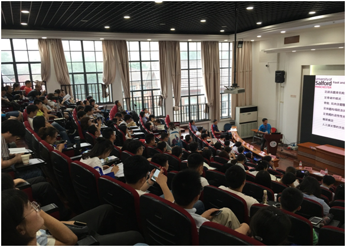
- 图6：英国Salford大学刘安民教授在做主题报告
- 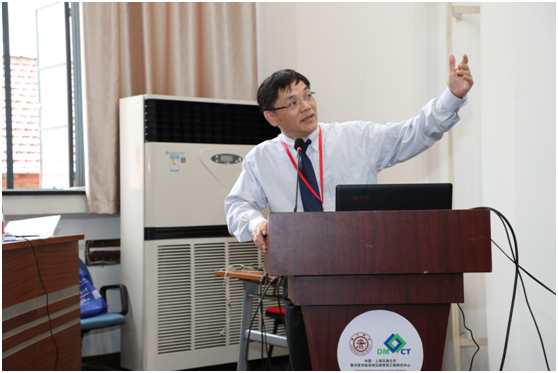
- 图7：美国北卡罗来纳大学夏洛特分校郑乃权教授在做主题报告
- 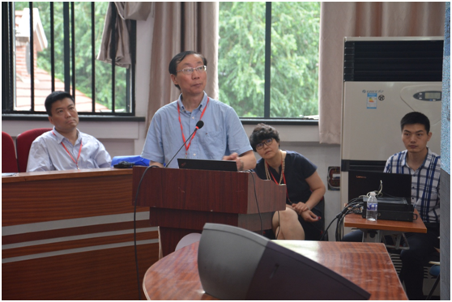
- 图8：上海交通大学医学院附属瑞金医院陈生弟教授在做主题报告
- 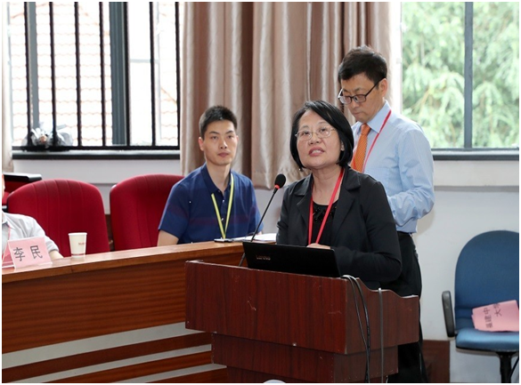
- 图9：台湾慈济大学物理治疗学系主任林光华教授在做主题报告
- 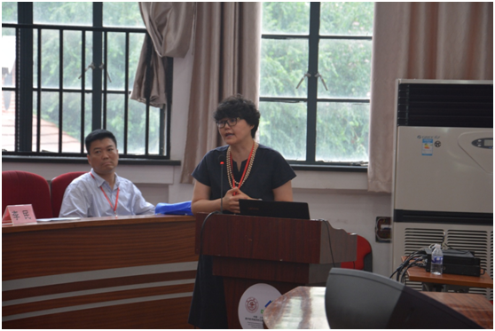
- 图10：上海岳阳医院姜淑云教授在做主题报告
- 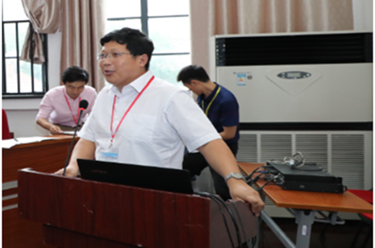
- 图11：北航生物与医学工程学院副院长蒲放教授在做主题报告

- 图12：加拿大多伦多康复研究院李悦教授在做主题报告
- 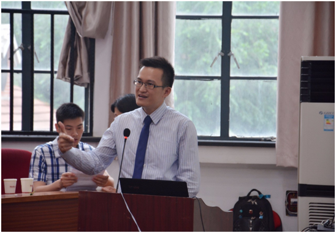
- 图13：上海交通大学生物医学工程学院特别研究员蔡宗远老师在做主题报告
- 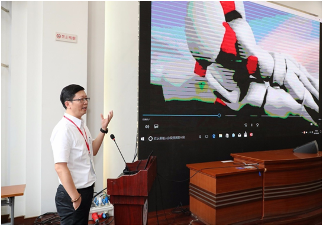
- 图14：台湾慈济大学物理治疗学系杨志鸿教授在做主题报告
- 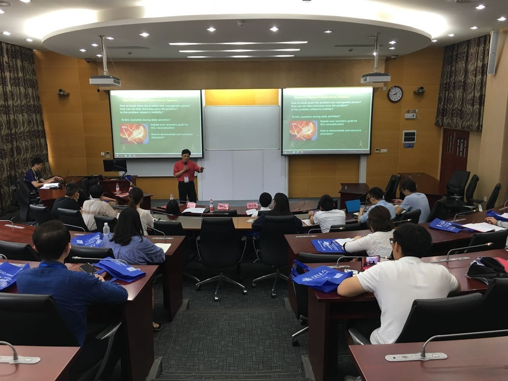
- 图15：大会workshop现场图
- 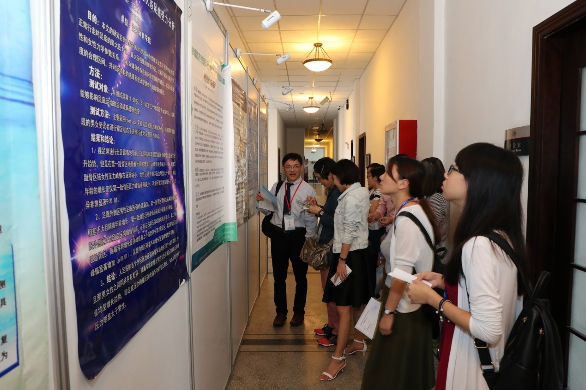
- 图16: 壁报作者与专家进行交流
为鼓励年轻学者在运动生物力学领域的积极投入与发展，本次大会设立了最佳论文评选，由大会学术委员会专家对口头报告进行现场打分，由全体与会代表对壁报进行投票，评选出最佳口头报告和最佳壁报优胜者。来自首都医科大学的李伟、上海交通大学的吴昱和杨文婷、北京体育大学的张力文获得了最佳论文奖。
- 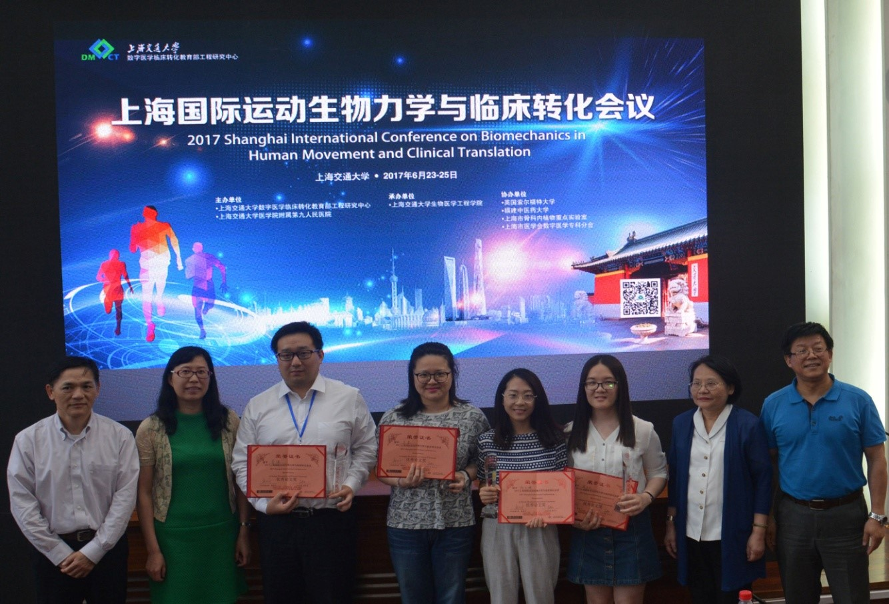
- 图17：论文获奖者与专家的合影
本届会议为有志于运动生物力学基础与临床研究的研究人员、临床医生和研究生们搭建了多学科交叉的良好交流平台，尤其是年轻学者的研究成果获得了专家的点评和指导,在与专家们的互动交流中收获丰厚。会议获得与会代表的广泛好评，取得圆满成功！
上海交通大学
数字医学与临床转化教育部工程研究中心
二零一七年六月二十六日